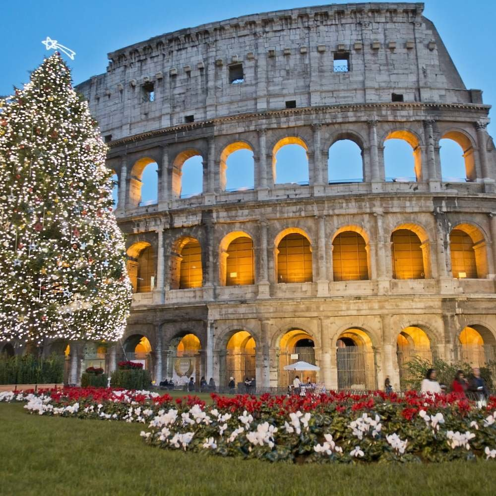
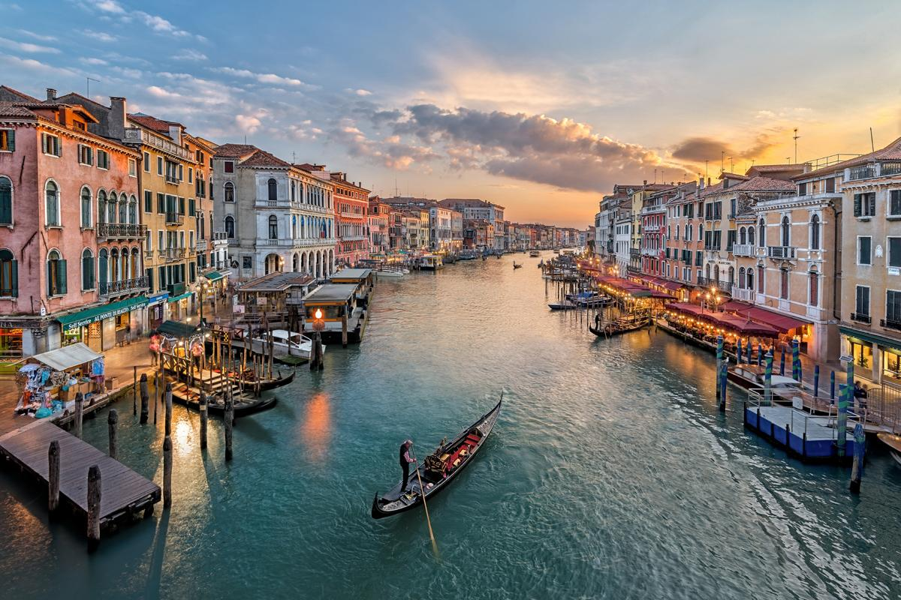
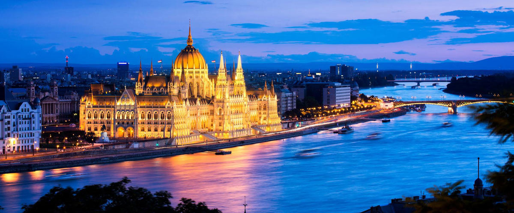

Una embriagadora mezcla de monumentos legendarios, arte imponente y vibrante vida callejera hace de Roma, la Ciudad Eterna, una de las capitales más hermosas del mundo.
|
Itinerario |
|---|
1º DÍA : ROMALlegada a Roma y traslado compartido al hotel. |
2º DÍA : ROMARecogida en el hotel para la realización de la excursión a pie “Descubriendo Roma”, con este tour a pie de 3 horas podrá ver los sitios más famosos de la ciudad, en una sola mañana viajará a través de siglos de historia y descubrirá las principales atracciones de la ciudad. Empezando en Largo Argentina se visita Campo de’ Fiori, Plaza Farnese, Plaza Navona, Pantheon, la Fontana de Trevi y Plaza de España. Resto del día libre. |
3º DÍA : ROMADía libre. |
4º DÍA : ROMATraslado compartido al aeropuerto. Fin de los servicios. |
recorre las ciudades artísticamente más notables de Europa, comenzando en la imperial Viena y finalizando en la eterna Roma. Un viaje de los que serenan el espíritu, un baño de Arte mayúsculo en unas ciudades que mantienen la esencia de su más espléndida época, con el mandato de conservar sus tesoros para disfrute de la Humanidad. Un reto en el que todos estamos implicados, porque merece la pena disfrutar de tan ingente patrimonio.
|
Itinerario |
|---|
1º DÍA : CIUDAD DE ORIGEN - VIENALlegada a Roma y traslado compartido al hotel. |
2º DÍA : VIENADespués del desayuno haremos una visita de la ciudad más imperial de Europa recorriendo su elegantísimo anillo. Veremos una de la Óperas más prestigiosa del mundo, el Hotel Imperial, Museos, el Palacio de Hofburg, el Parlamento, el Ayuntamiento, la Iglesia Votiva y la Iglesia de San Carlos Borromeo. Avanzamos hacia el Canal del Danubio, donde contemplaremos la zona moderna de Viena continuando hasta el parque de atracciones de El Prater famoso por su noria. Haremos una parada en el Palacio del Belvedere para disfrutar de sus jardines de estilo francés. Tarde libre. Por la noche podremos asistir, opcionalmente, a un concierto con composiciones de Mozart y Strauss, la mejor opción en la capital de la música clásica.. |
3º DÍA : VIENA - VENECIAEmprendemos viaje por carretera, ya desayunados, hacia la frontera con Italia, atravesando las regiones alpinas de Estiria y Carintia hasta llegar a Venecia. Alojamiento. |
4º DÍA : VENECIA - FLORENCIADespués del desayuno nos dejaremos extasiar por la ciudad de Venecia con sus 118 islas y sus más de 400 puentes, surcada por multitud de canales, puentes y palacios de abolengo. Tiempo libre. Para los que deseen, organizaremos una serenata musical en góndolas (opcional). Más tarde partimos por autopista atravesando los Apeninos hasta la ciudad de Florencia. Alojamiento. |
5º DÍA : FLORENCIA - ROMAEn este día haremos una visita a pie, tras el desayuno, por esta hermosa ciudad, donde el arte se siente a cada paso. Recorreremos la plaza de San Marcos, pasando por delante de la Academia de las Bellas Artes y llegando al mercado de la Paja. Contemplaremos la combinación de mármoles en la fachada de la Catedral Santa María del Fiore con su inconfundible campanario de Giotto, y la Puerta del Paraíso que da acceso al Baptisterio. Extasiados de tanto arte, emprenderemos marcha hacia Roma. Llegada y alojamiento. Por la tarde noche podremos realizar una excursión (opcional) a la Roma Barroca. |
6º DÍA : ROMADesayuno en el hotel. Haremos un completo recorrido por la Roma Papal, la Roma del Imperio y la Roma de la Modernidad. Llegaremos hasta la Plaza Venecia pasando por la Avenida de los Foros Imperiales, apreciando la grandeza de esta urbe en los primeros años de la era cristiana. Nos encontramos con el Coliseo, símbolo por excelencia de la ciudad. Pasaremos también por el Circo Máximo, la Basílica de Santa María la Mayor y atravesando el río Tíber, llegaremos a la Ciudad del Vaticano, el Estado más pequeño del mundo. Pueden realizar una completa excursión opcional visitando los Museos Vaticanos, la Basílica de San Pedro y la Capilla Sixtina, donde, en riguroso silencio, admiraremos dos de llas obras más importantes de Miguel Ángel: la Bóveda y el Juicio Final. Una visita excepcional contemplando las obras de Miguel Ángel, Bernini, Botticelli, y todos los grandes del Renacimiento italiano, que han enriquecido con su arte este Estado. |
7º DÍA : ROMADesayuno y día libre. Proponemos una excursión (opcional) de día completo con almuerzo incluido a Nápoles, Pompeya y Capri. Saldremos de Roma hacia Pompeya donde nos ofrecerán un café antes de entrar a visitar las ruinas de esta ciudad, sepultada por las cenizas del volcán Vesubio en su erupción en el año 79 dC. Más tarde realizamos un pequeño recorrido por Nápoles, para llegar al puerto y embarcar con destino a la isla de Capri. Desembarcamos y, con un pequeño autobús, subimos a 600 metros de altura para llegar a Anacapri, desde donde tenemos unas vistas inmejorables de la isla. Aquí comeremos, y tendremos tiempo libre antes de volver al puerto y hacer el camino de regreso a Roma. |
8º DÍA : ROMA - CIUDAD DE ORIGENDesayuno. Ahora ya, por su cuenta, y dependiendo del horario de su vuelo, pueden hacer sus últimos paseos por Roma antes de dirigirse al aeropuerto. Nosotros nos despedimos deseándoles un buen viaje de regreso. |
El Danubio, fuente de inspiración para numerosos artistas, separa con su inmensidad Buda y Pest, dos grandes ciudades que hoy se unen para formar una de las capitales europeas de mayor importancia. Enormes puentes unen ambas orillas acercando Buda, la antigua sede real y zona residencial más elegante, y Pest, corazón económico y comercial de la ciudad. Atrévete a perderte por sus calles repletas de historia y descubrirás por qué Budapest es conocida como "La Perla del Danubio" y es visitada por más de 6 millones de turistas cada año. Te hechizará.
|
Itinerario |
|---|
1º DÍA : BUDAPESTLlegada a Budapest y traslado al hotel. Información de datos prácticos y entrega de toda la documentación. |
2º DÍA : BUDAPESTBudapest, “la perla del Danubio”, se extiende a lo largo de ambas orillas del río. Buda es la parte más antigua, residencial y de colinas, mientras que Pest es la de los negocios y comercios. Recogida en el hotel, la primera parada de la Visita Panorámica es la plaza más grande y más impresionante de la ciudad: la Plaza de los Héroes, sobre la elegante alameda Andrássy, del período de oro de Pest. Pasaremos por el Teatro Nacional de la Ópera, desde donde nos dirigiremos hacia el Parlamento, para completar la imagen de la ciudad. Continuamos la vuelta en el distrito del Castillo que se extiende a Buda, en la cima de la colina del mismo nombre. Se atraviesa el río sobre el puente Margarita y se pasa muy cerca de la Isla Margarita, para ir a los Baños Turcos Király, surgidos en los tiempos turcos, y finalmente el puente más antiguo y hermoso del río: El puente de las Cadenas. Tarde libre y dedicada a tours opcionales. |
3º DÍA : BUDAPESTDía libre para seguir recorriendo esta bella ciudad centroeuropea o apuntarse a alguna excursión opcional. |
4º DÍA : BUDAPESTTiempo libre hasta la hora indicada por nuestros representantes, recogida en el hotel y traslado al aeropuerto de Budapest. Despedida y fin de nuestros servicios. |